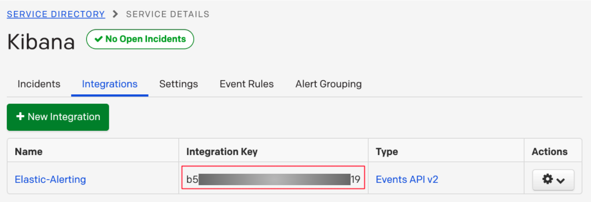

PagerDuty connector and action
editPagerDuty connector and action
editThe PagerDuty connector enables you to trigger, acknowledge, and resolve PagerDuty alerts. In particular, it uses the v2 Events API.
To create this connector, you must have a valid PagerDuty integration key. For configuration tips, refer to Configure PagerDuty
Create connectors in Kibana
editYou can create connectors in Stack Management > Connectors or as needed when you’re creating a rule. For example:
Connector configuration
editPagerDuty connectors have the following configuration properties:
- API URL
-
An optional PagerDuty event URL.
Defaults to
https://events.pagerduty.com/v2/enqueue. If you are using thexpack.actions.allowedHostssetting, make sure the hostname is added to the allowed hosts. - Integration key
- A 32 character PagerDuty Integration Key for an integration on a service, also referred to as the routing key.
- Name
- The name of the connector. The name is used to identify a connector in the management UI connector listing, or in the connector list when configuring an action.
Test connectors
editAfter you create a connector, use the Test tab to test its actions:
When you create a rule that uses a PagerDuty connector, you can use any of these types of actions. Rule recovery actions also support all types.
Acknowledge action
editWhen you test the acknowlege action, you must provide the de-duplication key for a PagerDuty alert:
Resolve action
editLikewise when you test the resolve action, you must provide the de-duplication key:
Trigger action
editWhen you test the trigger action, you must provide a summary for the PagerDuty alert:
This action has the following properties:
- Class
-
An optional value indicating the class/type of the event, for example
ping failureorcpu load. - Component
-
An optional value indicating the component of the source machine that is responsible for the event, for example
mysqloreth0. - Custom details
- An optional set of additional details to add to the event.
- DedupKey
-
All actions sharing this key will be associated with the same PagerDuty alert. This value is used to correlate trigger and resolution. This value is optional, and if not set, defaults to
<rule ID>:<alert ID>. The maximum length is 255 characters. See alert deduplication for details.By default, when you create rules that use the PagerDuty connector, the de-duplication key is used to create a new PagerDuty incident for each alert and reuse the incident when a recovered alert reactivates.
- Event action
-
One of
Trigger(default),Resolve, orAcknowledge. See event action for more details. - Group
-
An optional value indicating the logical grouping of components of a service, for example
app-stack. - Links
- An optional list of links to add to the event. You must provide a URL and plain text description for each link.
- Severity
-
The perceived severity of on the affected system.
This can be one of
Critical,Error,WarningorInfo(default). - Source
- An optional value indicating the affected system, preferably a hostname or fully qualified domain name. Defaults to the Kibana saved object id of the action.
- Summary
-
An optional text summary of the event, defaults to
No summary provided. The maximum length is 1024 characters. - Timestamp
- An optional ISO-8601 format date-time, indicating the time the event was detected or generated.
For more details on these properties, see PagerDuty v2 event parameters.
Connector networking configuration
editUse the Action configuration settings to customize connector networking configurations, such as proxies, certificates, or TLS settings. You can set configurations that apply to all your connectors or use xpack.actions.customHostSettings to set per-host configurations.
Configure PagerDuty
editBy integrating PagerDuty with rules, you can:
- Route your rules to the right PagerDuty responder within your team, based on your structure, escalation policies, and workflows.
- Automatically generate incidents of different types and severity based on each rule’s context.
- Tailor the incident data to match your needs by easily passing the rule context from Kibana to PagerDuty.
- From the Configuration menu, select Services.
-
Add an integration to a service:
- If you are adding your integration to an existing service, click the name of the service you want to add the integration to. Then, select the Integrations tab and click the New Integration button.
- If you are creating a new service for your integration, go to Configuring Services and Integrations and follow the steps outlined in the Create a New Service section, selecting Elastic Alerts as the Integration Type. Continue with the connector creation in Kibana after you have finished these steps.
- Enter an Integration Name in the format Elastic-service-name (for example, Elastic-Alerting or Kibana-APM-Alerting) and select Elastic Alerts from the Integration Type menu.
-
Click Add Integration to save your new integration.
You will be redirected to the Integrations tab for your service. An Integration Key is generated on this screen.
 - Save this key for use when you configure the connector in Kibana.